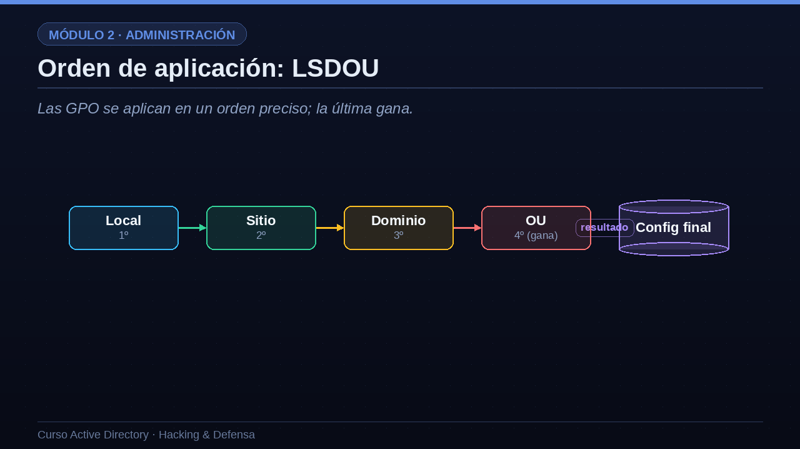

01¿Qué es una GPO?
Un conjunto de ajustes que se aplican automáticamente a usuarios y equipos.
Empecemos por lo básico. Una GPO es un conjunto de ajustes de configuración que se aplican de forma automática a usuarios y equipos. Con ellas puedes definir la política de contraseñas, los permisos locales, qué software se instala, scripts de inicio, el fondo de escritorio, restricciones de seguridad y literalmente cientos de opciones más. Cada GPO tiene dos mitades: la configuración de equipo, que se aplica cuando la máquina arranca, y la configuración de usuario, que se aplica cuando alguien inicia sesión. Para que surta efecto, una GPO se enlaza a un contenedor: puede ser un sitio, el dominio entero o, lo más habitual, una unidad organizativa. Y, físicamente, las GPO se almacenan en un recurso compartido del controlador llamado SYSVOL, que todos los clientes del dominio pueden leer. Recuerda SYSVOL, porque reaparecerá cuando hablemos de ataques.
- Configuración centralizadaDefine contraseñas, permisos, software, scripts, escritorio y mucho más.
- Dos mitadesConfiguración de equipo (al arrancar) y configuración de usuario (al iniciar sesión).
- Se enlaza a un contenedorSe vincula a un sitio, a un dominio o, lo más común, a una OU.
- Se guarda en SYSVOLUn recurso compartido del DC que todos los clientes leen.
02Orden de aplicación: LSDOU
Las GPO se aplican en un orden preciso; la última gana.
Un punto que confunde a mucha gente es el orden en que se aplican las GPO cuando hay varias. La regla se resume en el acrónimo LSDOU, que marca la secuencia: primero se aplica la política Local del equipo, después las del Sitio, luego las del Dominio y, por último, las de la OU. ¿Por qué importa el orden? Porque si dos GPO dicen cosas contradictorias, gana la que se aplica en último lugar. Y como la OU es la última, las GPO enlazadas a la OU más cercana al objeto tienen la última palabra y sobrescriben a las de niveles superiores. Existen además dos excepciones que alteran esto: la opción de forzar, enforced, que impide que una GPO superior sea sobrescrita, y el bloqueo de herencia, que corta las políticas que vienen de arriba. Dominar este orden es esencial para depurar por qué un ajuste no se aplica como esperabas.

03Para qué se usan en una empresa real
Veamos para qué se usan de verdad las GPO en el día a día de una empresa. En seguridad, definen la política de contraseñas y el bloqueo de cuentas tras varios intentos fallidos. En restricciones, impiden cosas como usar dispositivos USB o acceder al panel de control. En despliegue, instalan software de forma automática y conectan unidades de red. Con scripts, ejecutan tareas al arrancar el equipo o al iniciar sesión el usuario. Y en hardening, es decir en el endurecimiento de la seguridad, aplican plantillas de configuración reconocidas, como las guías CIS o las líneas base de seguridad de Microsoft, que ajustan de golpe cientos de parámetros recomendados. Esta versatilidad es la razón por la que las GPO son la herramienta de administración más usada: un solo cambio bien hecho se propaga a toda la organización.
| Categoría | Ejemplo de uso |
|---|---|
| Seguridad | Política de contraseñas y bloqueo de cuentas |
| Restricciones | Impedir usar USB o el panel de control |
| Despliegue | Instalar software y mapear unidades de red |
| Scripts | Ejecutar tareas al arranque o al inicio de sesión |
| Hardening | Aplicar plantillas CIS o Microsoft Security Baseline |
04Las GPO también son un objetivo
Ahora el lado oscuro: las GPO son un objetivo de primer orden para un atacante, y conviene entender por qué. En primer lugar, quien puede modificar una GPO puede ejecutar código en todos los equipos a los que esa política se aplica; es, en la práctica, ejecución remota masiva. En segundo lugar, el recurso SYSVOL donde se guardan las políticas es legible por cualquier usuario del dominio, así que un atacante puede estudiar toda la configuración. Y en tercer lugar, existe un fallo histórico, conocido como MS catorce guion cero veinticinco, por el que algunas GPO antiguas guardaban contraseñas cifradas con una clave que Microsoft publicó; cualquiera podía descifrarlas leyendo SYSVOL. ¿Cómo se protegen? Controlando estrictamente quién tiene permiso para editar GPO, porque ese permiso equivale casi a controlar el dominio; auditando todos los cambios; y no guardando jamás credenciales dentro de las políticas, usando en su lugar soluciones como LAPS.
Por qué atraen al atacante
- Ejecución remota masivaModificar una GPO permite ejecutar código en todos sus equipos.
- SYSVOL es legibleCualquier usuario puede leer el contenido de las políticas.
- Secretos antiguosContraseñas cifradas con una clave pública conocida (MS14-025).
Cómo protegerlas
- Controlar quién edita GPOPermiso de edición = casi control del dominio.
- Auditar cambiosVigilar la creación y modificación de directivas.
- Nunca guardar secretosProhibir credenciales en GPP; usar LAPS.
05Trabajar con GPO desde PowerShell
Las GPO también se gestionan y se auditan por línea de comandos.
Aunque las GPO se suelen gestionar con una consola gráfica, conviene saber que también se manejan por línea de comandos con PowerShell, lo cual es clave para auditarlas a escala. Con el comando Get guion GPO guion All obtienes la lista de todas las directivas del dominio con su nombre y su identificador. Con Get guion GPOReport puedes generar un informe completo en HTML de lo que hace una política concreta, perfecto para revisiones de seguridad. Y con New guion GPLink enlazas una GPO a una unidad organizativa, por ejemplo para aplicar una política de hardening a la OU de servidores, con la opción de forzarla. Estos comandos son también los que usa un defensor para inventariar las políticas, y los que usa un atacante para descubrir dónde apuntar. Conocer la línea de comandos te da visibilidad completa sobre la configuración del dominio.
Get-GPO -All | Select DisplayName, Id Default Domain Policy 31B2F340-... Politica-Contrasenas 7A1C9E55-... Get-GPOReport -Name 'Politica-Contrasenas' -ReportType Html -Path rep.html # Enlazar una GPO a una OU New-GPLink -Name 'Hardening-Base' -Target 'OU=Servidores,DC=empresa,DC=local' GpoId : Hardening-Base Enforced : Yes
06Buenas prácticas con GPO
Cerremos con buenas prácticas. Primera: mantén pocas GPO y nómbralas con claridad; un bosque con cientos de políticas con nombres crípticos es una pesadilla de mantener y una fuente de errores de seguridad. Segunda: prueba siempre antes de desplegar, aplicando la GPO primero a una OU de pruebas, y apóyate en filtros de seguridad o filtros WMI para acotar a qué equipos llega. Tercera: separa las políticas de seguridad de las de configuración; no mezcles el hardening con el fondo de escritorio en la misma GPO. Y cuarta, la más importante en seguridad: revisa periódicamente quién tiene permiso para editar GPO y redúcelo a un grupo muy reducido y de alto nivel, porque, como hemos visto, ese permiso es casi equivalente a ser administrador del dominio.
- Pocas GPO, bien nombradasNombres claros y documentados evitan errores y conflictos.
- Prueba antes de desplegarUsa una OU de pruebas y filtros de seguridad o WMI.
- Separa seguridad de configuraciónGPO distintas para hardening y para ajustes de usuario.
- Revisa permisos de ediciónSolo un grupo reducido y de alto nivel debe poder editarlas.
07Resumen de la lección
Resumamos. Las GPO son el mecanismo de configuración centralizada de Active Directory, con una mitad de equipo y otra de usuario, y se enlazan a OU, dominios o sitios. Se aplican en el orden LSDOU, local, sitio, dominio y OU, donde la última gana, salvo que se use la opción de forzar o el bloqueo de herencia. Se almacenan en SYSVOL, un recurso legible por todos los usuarios, lo que obliga a no guardar nunca secretos en ellas. Y son un objetivo de ataque de primer nivel, porque modificar una GPO equivale a ejecutar código en toda la flota de equipos. En la próxima lección veremos cómo diseñar un Active Directory seguro desde el principio, con el modelo de niveles o Tier Model. Nos vemos en la lección seis.
- GPO = configuración centralizadaDos mitades: equipo y usuario; se enlazan a OU, dominio o sitio.
- Orden LSDOULocal, Sitio, Dominio, OU; la última gana, salvo enforced o bloqueo.
- Guardadas en SYSVOLLegibles por todos: cuidado con los secretos.
- Objetivo de ataqueEditar una GPO = ejecutar código en toda la flota.